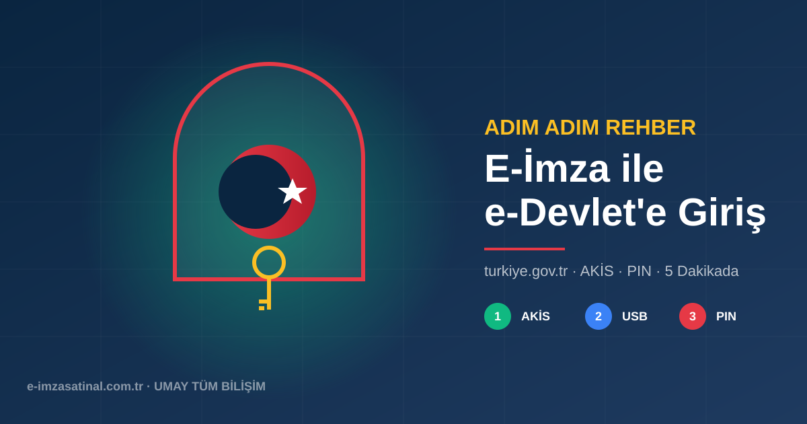

e-Devlet Nedir ve Neden Önemli?
e-Devlet Kapısı (turkiye.gov.tr), Türkiye Cumhuriyeti devletinin sunduğu 5.000+ kamu hizmetine elektronik erişim sağlayan portaldır. SGK işlemleri, vergi beyannamesi, nüfus kayıt örneği, sabıka kaydı, askerlik durum belgesi, e-imzalı dilekçeler ve daha fazlası buradan yapılabilir.
e-Devlet'e 4 farklı yöntemle giriş yapılabilir: şifre (PTT'den alınan), mobil imza, internet bankacılığı ve elektronik imza (e-imza). Bu rehberde e-imza ile güvenli giriş süreci anlatılmaktadır.
E-İmza ile Giriş İçin Gereksinimler
- Geçerli bir e-imza sertifikası (Ayyıldız NES — süresi dolmuş olmamalı)
- USB token veya akıllı kart + okuyucu
- AKİS sürücüsü (Ayyıldız Kart İzleme Sistemi)
- Tarayıcı eklentisi (Chrome, Edge veya Firefox için)
- Java Runtime Environment (bazı işlemlerde gerekli olabilir)
- PIN kodu (kart ile birlikte size iletilen 4-8 haneli şifre)
Adım Adım E-Devlet Giriş Süreci
1. AKİS ve Eklentiyi Doğrula
Sistem tepsisinde AKİS simgesi yeşil olmalı. Tarayıcıda e-imza eklentisi aktif olmalı.
2. USB Token Tak
USB token bilgisayara takıldığında "kart algılandı" bildirimi gelir.
3. turkiye.gov.tr'ye Git
Tarayıcıdan turkiye.gov.tr sayfasını açın. Sağ üstte "Giriş Yap" butonuna basın.
4. "Elektronik İmza" Sekmesini Seç
Açılan giriş ekranında "Elektronik İmza" sekmesini seçin.
5. Sertifikanı Seç
Açılan pencerede e-imza sertifikanız listelenir. Seçip "İmzala" butonuna basın.
6. PIN Kodunu Gir
PIN kodunuzu girin. Doğru girildiğinde e-Devlet ana sayfasına giriş yapmış olursunuz.
Sık Karşılaşılan Sorunlar ve Çözümleri
Sorun 1: "Kart Algılanmıyor"
- USB token başka bir USB porta takın
- AKİS uygulamasını yeniden başlatın
- Bilgisayarı yeniden başlatın
- AKİS'in güncel sürümünü yükleyin (Ayyıldız resmi sitesinden)
Sorun 2: "Tarayıcı Eklentisi Çalışmıyor"
- Chrome veya Edge için eklentinin yüklü olduğunu kontrol edin
- Firefox kullanıyorsanız NSS kütüphanesi tanımlı olmalı
- Detaylı kurulum için tarayıcı eklentisi rehberimizi takip edin
Sorun 3: "PIN Yanlış" Hatası
- 3 hatalı denemede kart bloke olur
- PUK kodu ile açılabilir
- PUK'ı 5 kez hatalı girerseniz kart kalıcı olarak kilitlenir
- Detaylar için e-imza yenileme rehberimize bakın
Sorun 4: "Sertifika Süresi Dolmuş"
- Süre bitmiş bir e-imza ile giriş yapılamaz
- WhatsApp +90 850 777 11 45 hattından yenileme başvurusu yapın
E-Devlet'te E-İmza ile Yapılabilen Önemli İşlemler
- Vergi: Beyanname onayı, vergi borcu sorgulama
- SGK: İşveren işlemleri, sigortalı sorgulama, e-Bildirge
- Nüfus: Kimlik talep, nüfus kayıt örneği
- Adalet: UYAP'a giriş (avukatlar için), sabıka kaydı
- Sağlık: e-Reçete (doktorlar için), Medula sistemi
- Eğitim: Akademik başvurular, üniversite işlemleri
- Tapu: Tapu sorgulama, online tapu işlemleri
- İhale: EKAP üzerinden kamu ihale teklifleri